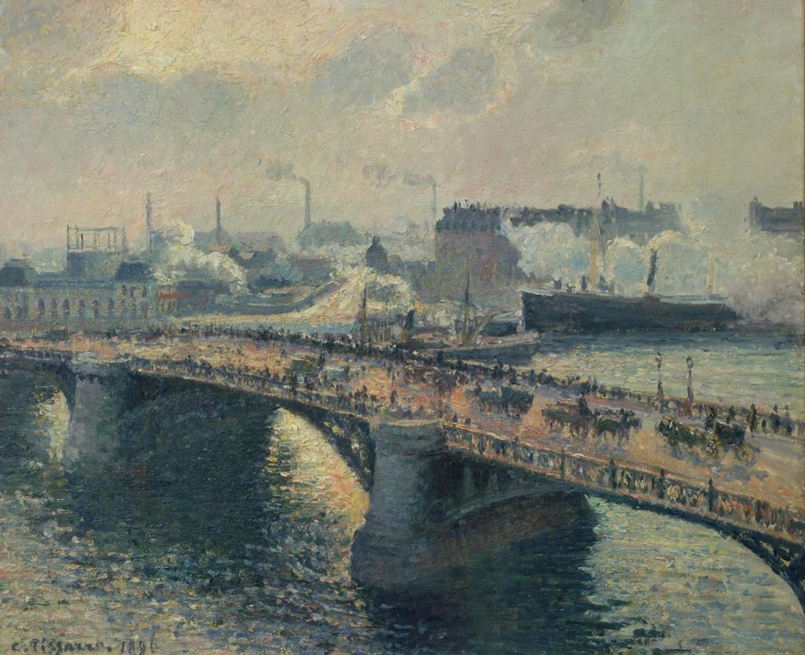

<head>
<meta charset="UTF-8" />
<meta name="keywords" content="drawing, painting" />
<meta name="description" content="drawings by Sunjy" />
<title>Sunjy</title>
<link rel="shortcut icon" type="image/x-icon" href="../../mImages/mCommon/favicon.ico" media="screen" />
<link rel="stylesheet" type="text/css" href="../../mCsses/mCommon/mCssA.css" />
<link rel="stylesheet" type="text/css" href="../../mCsses/mCommon/mCssB.css" />
<link rel="stylesheet" type="text/css" href="../../mCsses/mCommon/mCssC.css" />
<link rel="stylesheet" type="text/css" href="../../mCsses/mCommon/mCssD.css" />
<link rel="stylesheet" type="text/css" href="../../mCsses/mContent/mCssA.css" />
<link rel="stylesheet" type="text/css" href="../../mCsses/mContent/mCssB.css" />
<link rel="stylesheet" type="text/css" href="../../mCsses/mContent/mCssC.css" />
<link rel="stylesheet" type="text/css" href="../../mCsses/mContent/mCssD.css" />
</head>
<script type="text/javascript" src="../../mScripts/mContent/mContentAA.js" /></script>
<script type="text/javascript" src="../../mScripts/mContent/mContentAB.js" /></script>
<script type="text/javascript" src="../../mScripts/mContent/mContentAC.js" /></script>
<script type="text/javascript" src="../../mScripts/mContent/mContentAD.js" /></script>
<script type="text/javascript"></script> 
<script type="text/javascript">
document.write('<div class="mImgAbsolute"></div>');
/*
document.write('<p class="mFontSizeBColor" />From a white paper...</p>');
document.write('<table class="center"><tr><td>');
document.write('');
document.write('</td></tr></table>');
*/
</script>


<script type="text/javascript">
document.write('<p class="mFontSizeBColor" />The Pont Boieldieu in Rouen, sunset, foggy weather</p>');
document.write('<p class="mFontSizeSColor" />“The Pont Boieldieu in Rouen, sunset, foggy weather” by Camille Pissarro depicts the bridge in foggy weather, with its traffic of horse-drawn carts and pedestrians. In the distance, the quays are busy with boats layered with smoke and mist.<br><br>The bridge joined the old Gothic city in the north with the southern industrial areas of Sainte-Sever. On the far bank, the boats are docking and unloading cargo, with the urban landscape in the background.<br><br>Pissarro’s pointillist experiences in the years 1885-1890 and the technique of juxtaposed tones allowed him to exploit all the resources of his palette.<br><br>Pissarro captures the transitive effects of the mist and smoke, with a sense of movement in the city’s activity.<br></p>');
document.write('<table class="center" /><tr><td>');
document.write('<br>The bridge joined the old Gothic city in the north with the southern industrial areas of Sainte-Sever. On the far bank, the boats are docking and unloading cargo, with the urban landscape in the background.<br><br>Pissarro’s pointillist experiences in the years 1885-1890 and the technique of juxtaposed tones allowed him to exploit all the resources of his palette.<br><br>Pissarro captures the transitive effects of the mist and smoke, with a sense of movement in the city’s activity.<br>" />');
document.write('</td></tr></table>');
</script>


